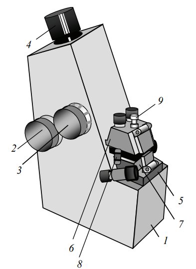

1. металлический корпус
2. маховик для перемещения изображения границы света и тени
3. маховик компенсатора для устранения окрашенности границы света и тени
4. окуляр
5. рефрактометрический блок
6. оправа подвижной осветительной призмы
7. оправа неподвижной измерительной призмы
8. застежка
9. рукоятка для поворота осветительной призмы
10. зеркало